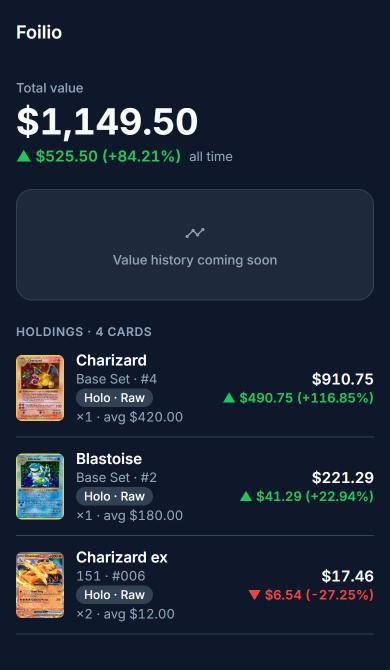
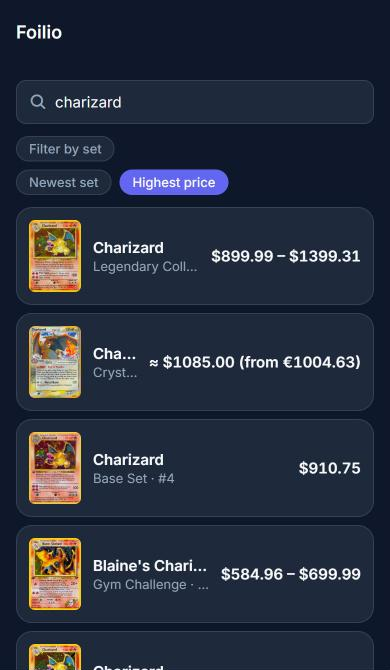
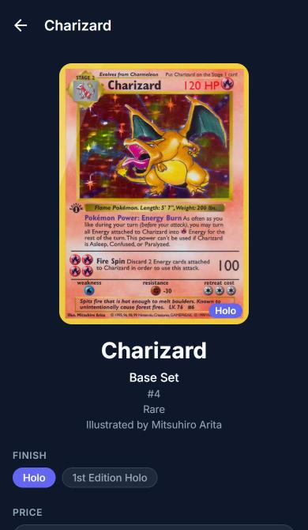
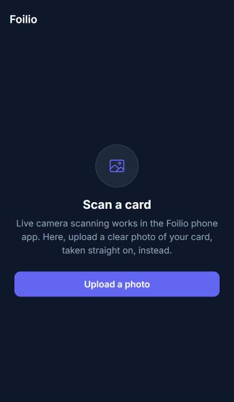

Foilio
In developmentAn AI trading card scanner and portfolio app: scan, price, and track a Pokémon card collection like a stock portfolio.




Overview
Foilio is an app for pricing and tracking a Pokémon card collection like a stock portfolio. It's an Expo (React Native) app for iOS, Android and web from one TypeScript codebase, plus a Python image-recognition pipeline for identifying a card from a photo.
Working today: card search across the full TCGdex catalog with a set filter and sorting by newest set or highest price; a card detail page with prices for each finish (Normal, Holo, Reverse Holo, 1st Edition); and a portfolio that tracks value and gain/loss for each holding, saved on the device so no account is needed.
Status: the AI image recognition doesn't fully work in the app yet. The Python prototype identifies a card from a photo, and I'm moving it onto a free Hugging Face Space and connecting it to the Scan tab.
I built Foilio with Claude Code as an AI-assisted workflow, while I owned the architecture, code review, debugging, and testing.
How It Works
Screens never call an API directly. They go through a CardDataProvider and a PortfolioStore from a shared package, so the data source or storage can be swapped without touching UI code.
The scanner is an embedding search, not a trained classifier. A pretrained DINOv2 model turns each card image into a 384-number fingerprint, and recognizing a photo is a nearest-neighbor lookup over about 22k cards that takes milliseconds.
| Area | What it uses |
|---|---|
| App | Expo with Expo Router in TypeScript: one codebase for iOS, Android and web, run on iPhone through Expo Go |
| Shared code | packages/shared: TypeScript types and the API client, including the CardDataProvider adapter |
| Card data | TCGdex API (free, no key) |
| Scanner AI | DINOv2 embeddings and a nearest-neighbor index built from TCGdex images, in Python (ml/), being moved to a free Hugging Face Space |
| Backend (planned) | Supabase: Postgres, edge functions and a daily price-snapshot job. Not set up yet. |
Design Decisions
-
Provider adapter pattern
All card data goes through one
CardDataProviderinterface, currently backed by TCGdex. Switching sources means writing one new class and changing one line. -
Prices per finish
A reverse holo can be worth many times its normal print, so every price carries its finish. When the provider data is ambiguous, like Cardmarket euro prices that don't say which finish they're for, Foilio skips the price instead of guessing.
-
Embedding-based scanner, no training
Recognition compares a photo's DINOv2 embedding against an index of every card image. New sets only need re-indexing, not retraining.
-
DINOv2 rather than CLIP
CLIP groups images by meaning, so every Pikachu looks alike to it. DINOv2 focuses on visual detail like artwork and layout, which is what tells two printings apart.
-
Free services only
No paid APIs or plans. Because eBay's free API only shows active listings, graded prices will always be labeled as asking prices, never sold values.
-
Local-first portfolio
The portfolio works with no account today. Entries use UUIDs, so a Supabase-backed store can replace local storage by changing one line.
What I Learned
[PLACEHOLDER: what you learned building Foilio, 2 to 4 points]
Roadmap
[PLACEHOLDER: roadmap]
Media
Foilio is an unofficial fan project. It is not affiliated with, endorsed by, or sponsored by Nintendo, The Pokémon Company, Creatures, or Game Freak. Pokémon and all related names and images are trademarks of their respective owners. Card data and images come from TCGdex.